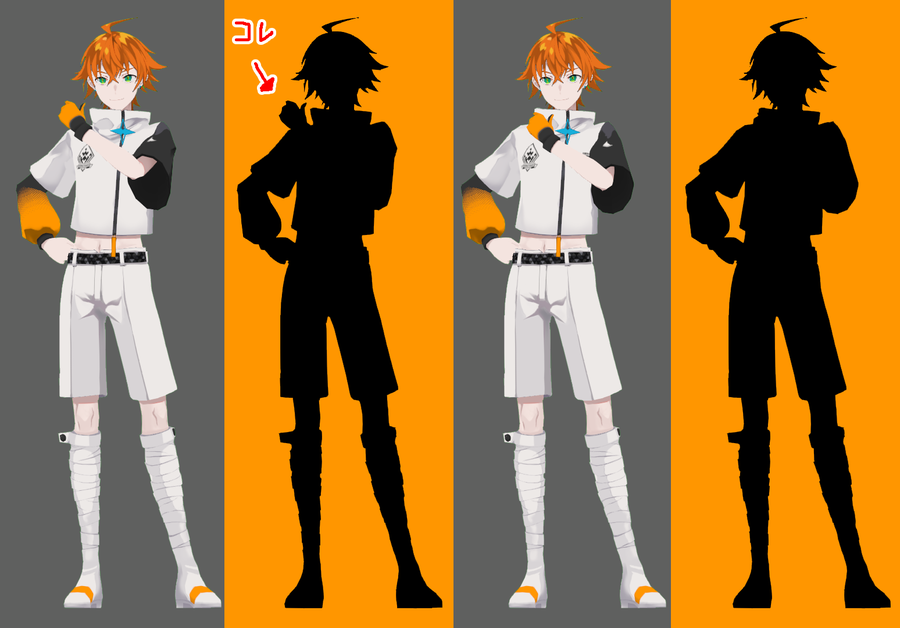
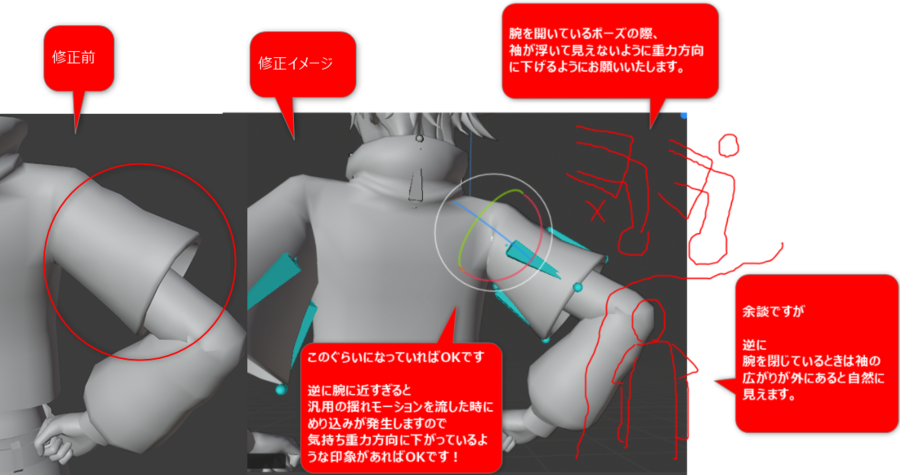
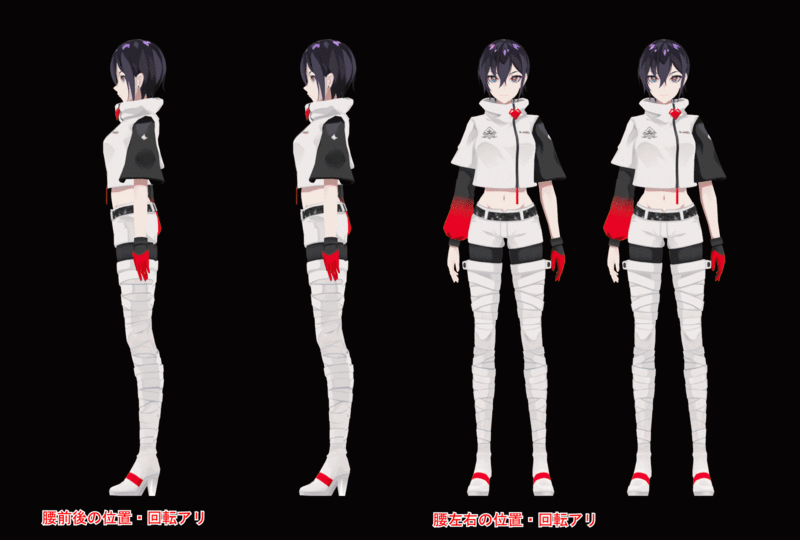
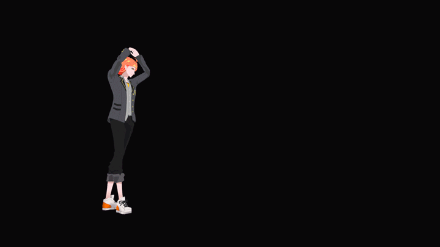
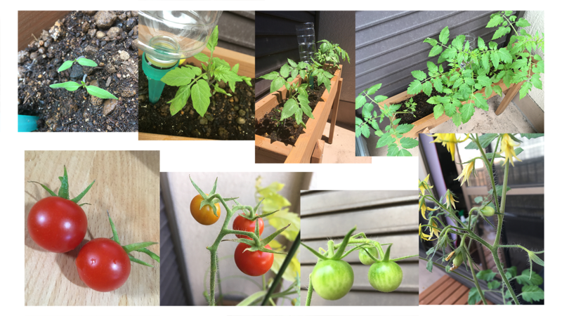

■簡単な自己紹介
はじめまして今回開発レポートを書かせていただくことになりました八木田肇と申します。
以前はアニメの映像制作会社でCGアニメーターをしておりましたが
昨年11月からMyDearestに入社して『アルトデウス：BC』に参加させていただいております。
最初のお仕事はティザームービーのカット作成という光栄なお仕事を頂きました。
さっそく締め切り1週間といわれたのを抜かせばとてもいい思い出です。ふふ...ははは...
現在はアニメーター(演出)とかミニトマトの飼育とか社内チャットに雑コラを流したりするのが主な仕事になります。
そういえばのクラウドファンディングです!!
なんと2000万円突破＆1600人突破スゴかったですね～!!
これもひとえにご支援していただいた皆様のお力だと思います。心より御礼申し上げます。
ありがとうございます！！ありがとうございます！！
きっとこの集まったお金で楽しいサプライズ企画などなどPRチームの皆様が色々考えてくださると思いますので
自分も楽しみにしております。(自分も支援者だったりします)
ところで何を書いたらいいのやらと悩みましたが、
アニメーターぶって今回はキャラクターの動きを作る上で大事なポイント的なやつを中心に解説させていただこうと思います。
ものっすごい基礎的な話で、動き作る仕事にちょっと興味ある学生さん向けというかそんなイメージの内容です。
アニメーターの仕事はざっくりいうとキャラクターを動かして命を吹き込むそんな仕事です。
人や動物、モンスターから車や飛行機など動くもの全てキャラクターとして演技を付けてあげるお仕事だと思っています。
(会社によってはCGアニメーターとかモーションデザイナーとかCGアーティストとか呼び名が違う場合があったりします。文化の違いややこしい)
どうやって動かしているかは開発レポートvol.5をチェックしてみてください!!
https://camp-fire.jp/projects/245574/activities/191297#main
第一章キャラアニメーション 大事な3つの袋編－－－－－－－－－－－
■第1の袋
それは【シルエット】です!! (既にお気づきかもしれませんが袋は特に関係ありません。元ネタ分からなければお父さんお母さんに聞いてね)
ネットで意味を検索すると「輪郭内を黒く塗りつぶした影絵」のような内容が出てきますが、まさにこれのことです。
キャラクターが黒塗りになってもそのキャラクター「らしさ」や「どんなポーズ」をしているのかわかるように意識して作成します。
分かりやすい例ですがヤマトの左手のシルエットに注目してみてください。

左手のシルエットが出ている方のポーズは「俺に任せろぃ！」みたいなポーズに見えると思いますが、
シルエットが体の中に入っているポーズの方はどんなポーズをしているのかわかりづらいと思います。
特にキャラクターが実際ゲーム内でどの距離で配置されるのかわからない汎用的なポーズやモーションは
奧にいてもシルエットだけでどういう行動をしているのか分かるようにしておかないと
プレイヤーに意図が伝わりづらくなるため大事なポイントになります。
また、衣装やキャラクターを象徴するような装飾物のシルエットも大事なポイントです。
下図は袖の部分に対する実際のチェックバック(調整依頼)の資料になります。

素材の質感(硬いのか・柔らかいのか・軽いのか・重いのかなど)を考慮に入れつつシルエットのイメージを決めていきます。
プロメテオスのジャケットは襟元以外しわが少ないのでやや硬い素材で伸縮性のないものかなと考えていました。
なので袖は重力方向に下ろしつつも、形は崩れ過ぎないイメージでチェックバックさせていただきました。
他にもシルエットの変化をうまく使うのもポイントです。
分かりやすい例で、ジャンプ前とジャンプした後のポーズ (レポート用に短時間で作ったのでクオリティは目をつむってやってください...)
左のヤマトはジャンプ前に腰を低く落としている状態に対して、右の方はあまり腰が落ちていない状態。
どちらの方が勢いがついて見えるでしょうか？
{kind=link}
{kind=link}
{kind=link}
お分かりでしょうか？左の方が勢いがあると思います。
それはなぜか？
高く飛ぶためには、「ばね」と一緒で潰れ(腰を落として膝を曲げた状態)が大きいほど力が強くなってより高く飛べるという事になります。
潰れている絵と伸びている絵で変化を大きく差をつけてあげることでより勢いのある印象を出すことができます。
逆に言えば大した力も入れていないのに凄く高くジャンプしやがる、こいつ本気を出したらどんな高さを飛ぶんだ...!!
みたいな場面での演出であれば右側のイメージもアリな気もします(作風とキャラのイメージ次第です)
他にも動きの起点から先端を遅らせるようなシルエットの変化とか
まだまだ色々シルエットにまつわることがありますが書き切れないので次行きます...
■第2の袋
それは【リズム・タイミング】です!!
動きを作る上でこれがかなり大事なポイントで、
リズム・タイミングの良し悪し=気持ちよさの良し悪しとなります。
参考例で同じ尺内でノアが腕を振る動きになります。
どちらの方が「バッ！」という気持ちよさを感じますか？

恐らく左の方がそう感じるのではないでしょうか？(ハイ、そこのあなた！！胸の谷間ではなく「腕の動き」を見てください！！)
具体的に何が違うかというと
左の絵の腕は内側に振る速度より外側に振る速度が「速く」なっており、緩急の付いた動きになっています。
右の絵の方は内側も外側もほぼ同じ速度で腕を振っている等速に近い腕の動きになっています。
等速で動かしてしまうと機械っぽいような動きに見えたり、ぎこちない動きに見えたりしてしまい気持ちのよさが損なわれることがあります。
また、連続した流れのある動きで一つ一つの動作は緩急がついていたとしても
動作と動作の「間」のタイミングが均一だとそれもメリハリのない動きに感じてしまうことがあります。
例えば走り幅跳びで「走ってきてジャンプから着地」するような動きを下の音でイメージしてみてください。
A.ダッダッダッダッダーン！！ザザーッ！！
B.ダッダッダッダッ・・ダーン！！・・・ザザーッ！！
Bの「・・ダーン！！」のところは踏切板のところでジャンプ前の溜めを入れたイメージの音になります。
そのあとの「・・・ザザーッ！！」のところは空中にいる時間が長いイメージになります。
AよりBの方がより力強く高く飛ぶイメージになりそうですよね？ですよね？
(資料準備する時間がなかったですが、きっとあなたの想像力なら見えるはずです。いや見える!!)
このようにリズムやタイミングに適切な変化を付けてあげることによって、より気持ちの良い動きが表現できると思います。
■第3の袋
それは「腰」です!!
キャラクターが脊椎動物型であれば腰の動きがとても重要になります。
まさに要(かなめ)、腰が動きの命といっても過言ではないと思います。
ざっくりしたものですが、腰が動いているポーズ(左)と動いていないポーズ(右)の比較です。

実際やってみるとわかりますが
上半身を横や前後に倒した時にも腰の角度や位置の変化でバランスを取ろうとします。
特に人間の場合、最も重量のあるパーツ「頭」に対して支点である足元とのバランスをとるために腰は絶えず変化します。
これもサボるとバランスの悪さやロボットのような違和感が出てきてしまうので大事なポイントです。
また、「動きの起点」として、とても重要な役割を果たします。
ピッチャーの投球などわかりやすいのではないでしょうか。
「燃えろ!!東京クロノス草野球」が開発されるかわかりませんが街小路くんに投げて頂きましょう。

スポーツで「腰を入れる」という言葉を耳にすることがあると思いますが
全身を使う動きをする際、腰を中心とした体重移動や回転運動から手や足など先端への力の伝達によってものすごいエネルギーを生み出すことができます。
新人アニメーターでよく見る傾向ですが、上半身や腕がダイナミックに動いていたとしても
腰が動いていないと全く力が入っていない、かつ不自然な印象になってしまいます。(腕だけでパンチとかよくある)
特にアクション系の大きい動きの時は腰の動き方ひとつで見栄えが相当変わってきますので要チェックです。
...という感じで基本となる大まかな3つのポイントを解説させていただきました。(袋はどこいった？)
演技を付ける上での具体的なポイントでしたが
プロのアニメーターとして意識するポイントとして
キャラクターのことを考える。世界観のことを考える。演出にあった芝居を考える。
これらを無視してどんなに素晴らしい動きを作ったとしても、それは作品にとっては違和感になってしまうので
自己満足だけに陥らないように気を付ける必要があると思います。
上の内容を踏まえたうえで「遊び心を入れる。」
これがアニメーター独自の味になって作家性と呼ばれるものが生まれると自分は考えています。
他にもいろいろ気を付けているポイントや基礎的な事は星のごとくあるためここには書き切れませんが、
プロジェクトアジトのツイッターの方で何かしら流れるかもしれませんのでよかったらチェックしてみてください。
https://camp-fire.jp/projects/245574/activities/195418#main
(作業の隙間があればきっと何かが投稿されるかも...隙間があれば...隙間ください...)
第二章 VRゲーム制作において気を付けていること編－－－－－－－－－－－
まず、今まで手掛けてきた映像の作品と大きく違うのは
「レイアウトがない」という部分です。
厳密に言うとあるにはあるのですが
東京クロノスのような主人公の視点＝プレイヤーの視点の場合で特にVRでは全方向視点が向けられるため、
プレイヤーの視線を誘導してあげる必要があるのかなと思います。
これはアニメでも同じですが、音であったり、相手のキャラの視線を使ったり、何かしらエフェクト的なものを出すなど
プレイヤーを見せたい方向に気づかせてあげるような工夫を考える楽しみがあるかなと。
特に音回りは立体的に再生することもできるので
後ろから声がして実際に振り向いたらヤツがいた！みたいなこともできるのはVRならではの面白さなのかなと思います。
あと「酔いには気をつけろ!!」というところもポイントです。
背景は絶対回すなと言われていたのにも関わらず、
ちょっとぐらいええやろと、ある場面で良かれと思い背景を回転させてVRで確認した瞬間
胸に熱いものがこみ上げてきてしまいました。。。
(頭痛がする は...吐き気もだ... のＤＩ〇様状態です。)
もう二度と背景を回すなどという愚行は犯しません。
自分はかなり酔いやすいタイプなのですが(だったら背景回してんじゃないよアンタ...って話なのですが)
VR酔いに対する調整は周りの先輩たちのアドバイスの元、酔わないように工夫していますのでご安心ください。
他には「VRならではの空間の立体感を生かす」というところも折角なので試してみたりしています。
まだ表には出ていないところなので詳しく書けないですが、より臨場感を体感していただくための...工夫...という感じです。
何も書けない笑
第三章 アルトデウスのアニメ作りたい(...というただの願望)編－－－－－－－
これはただの願望ですが、アニメーター的にはめちゃくちゃ作りたいって心の叫びです。
新しいPVでも短編でもいい...レイアウト切りたい...カットが作りたいという言葉がもはや口から溢れそうです...(たまに出ていますが)
見たくないですか？アルトデウスのアニメ!!
自分は見たい!!(プロデューサーに圧をかけるゴリ押しの叫び)
第四章 トマトを育ててみる編－－－－－－－－－－－
リモート作業中心になってから自分の時間が少し増えたので
トマトを育て始めました。結構楽しいです。

PCのモニターを見続けるとかキーボードやマウスばかりと戯れて一日終わってしまう...
基本そんな仕事ではあるので、土をいじったり水をやったり成長を観察してみたり気分転換にはとても効果あります。
土から芽が出てきたときは普段低いテンションが「ガッ!!」と人並みに上がるぐらい嬉しかったです笑
野菜を育てる大変さを実感すると、農家への感謝100倍になる効果も期待できます。
あとなんと言っても実ができたら食べれます。もぎたて野菜を丸かじりです！！最高
第五章 まとめ－－－－－－－－－－－
開発のレポートのれの字もない内容になってしまいましたが、
もしこの記事を読んでいるあなたが
CGアニメーターなってみようかなーとか興味あるなー
blenderとかでちょっと遊びでもやってみようかなーと思った方は
野菜育てるでも何でもいいですが
色んな事を体験して観察してみると良いと思います。
トマトを収穫する手元の動作を観察してみるとかそんなニッチなものでも
経験がいつか役に立つ日が来るかもしれません。(来ないこともあります)
もちろんアルトデウス: BCもぜひぜひ体験してみてください。
きっと面白い体験ができるのではと思います。
...おっと、そんなこんなで次のゲストが来たようなので今日はここまで。(次が誰なのかは知らない)
では、引き続きみんなで頑張って制作していきますので
アルトデウス:BCの応援よろしくお願いいたします!!
アカウント：はじじ2＠AGITスタッフ
今のところほぼ野菜のことしかつぶやいていないですが
この業界でCGアニメーター志望の方のご質問とか何かしらお応えできることがあるかもしれません。
(出来る限りですが...頑張ってお応えします...隙間があれば...隙間ってなんだ...？)
ではまた次回も開発レポートお楽しみに～
(～♪ ローカルTV番組っぽいED曲がここで流れるイメージ ～♪)
{kind=link}
{kind=link}